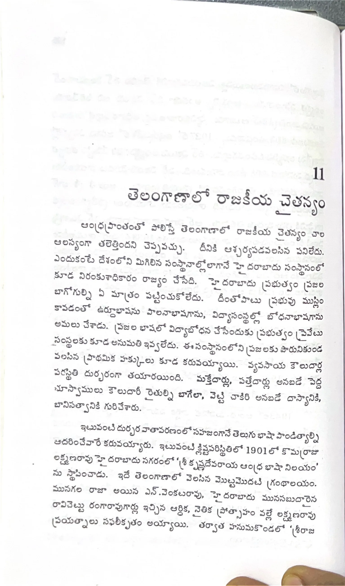

ముద్రిత పుట 196
scanతో మాన్యువల్గా ధృవీకరించిన పాఠ్యం

11 తెలంగాణాలో రాజకీయ చైతన్యం ఆంధ్రప్రాంతంతో పోలిస్తే తెలంగాణాలో రాజకీయ చైతన్యం చాల ఆలస్యంగా తలెత్తిందని చెప్పవచ్చు. దీనికి ఆశ్చర్యపడవలసిన పనిలేదు. ఎందుకంటే దేశంలోని మిగిలిన సంస్థానాల్లోలాగానే హైదరాబాదు సంస్థానంలో కూడ నిరంకుశాధికారం రాజ్యం చేసేది. హైదరాబాదు ప్రభుత్వం ప్రజల బాగోగుల్ని ఏ మాత్రం పట్టించుకోలేదు. దీంతోపాటు ప్రభువు ముస్లిం కావడంతో ఉర్దూభాషను పాలనాభాషగాను, విద్యాసంస్థల్లో బోధనాభాషగాను అమలు చేశాడు. ప్రజల భాషలో విద్యాబోధన చేసేందుకు ప్రభుత్వం ప్రైవేటు సంస్థలకు కూడ అనుమతి ఇవ్వలేదు. ఈ సంస్థానంలోని ప్రజలకు పౌరునికుండవలసిన ప్రాథమిక హక్కులు కూడ కరువయ్యాయి. వ్యవసాయ కౌలుదార్ల పరిస్థితి దుర్భరంగా తయారయింది. మక్తేదార్లు, పటేదార్లు అనబడే పెద్ద భూస్వాములు కౌలుదార్లను బగేలా, వెట్టి చాకిరి అనబడే దాస్యానికి, బానిసత్వానికి గురిచేశారు. ఇటువంటి దుర్భర వాతావరణంలో సహజంగానే తెలుగు భాషా పాండిత్యాల్ని ఆదరించేవారే కరువయ్యారు. ఇటువంటి క్లిష్టపరిస్థితిలో 1901లో కొమర్రాజు లక్ష్మణరావు హైదరాబాదు నగరంలో ‘శ్రీకృష్ణదేవరాయ ఆంధ్ర భాషా నిలయం’ను స్థాపించాడు. ఇదే తెలంగాణాలో వెలసిన మొట్టమొదటి గ్రంథాలయం. మునగల రాజా అయిన ఎన్. వెంకటరావు, హైదరాబాదు మునసబుదారైన రావిచెట్టు రంగారావు గార్లు ఇచ్చిన ఆర్థిక, నైతిక ప్రోత్సాహం వల్లే లక్ష్మణరావు ప్రయత్నాలు సఫలీకృతం అయ్యాయి. తర్వాత హనుమకొండలో ‘శ్రీరాజ